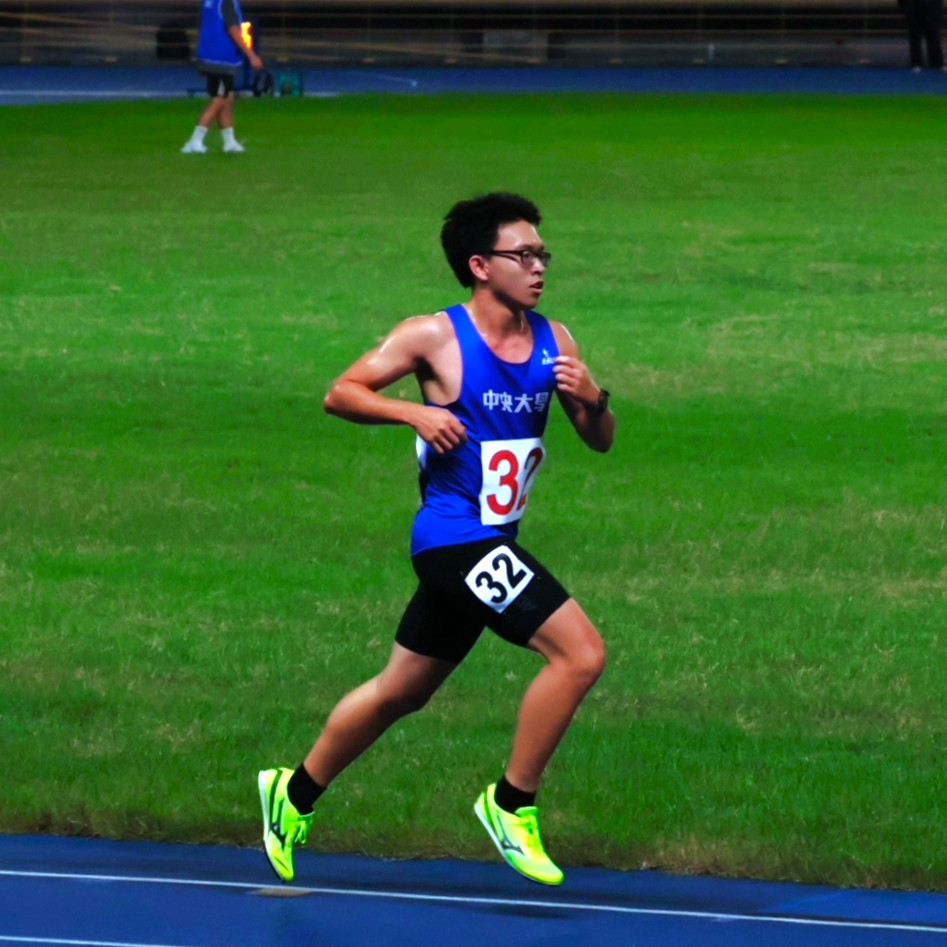

數位系統設計
使用 Verilog 與 Vivado 完成課堂實驗及 RISC-V CNN 期末專題。
01 / About
我是許彧嘉，就讀國立中央大學電機工程學系。目前主要接觸數位系統設計、C/C++ 與網頁工具，也持續記錄長跑訓練。

目前的課程與專案集中在數位系統、程式實作與資料整理。以下是近期持續投入的三個方向。
使用 Verilog 與 Vivado 完成課堂實驗及 RISC-V CNN 期末專題。
使用 C/C++ 處理課程題目，並以靜態網站整理作品與常用資料。
固定記錄距離、配速、日期與比賽成績，作為後續訓練參考。